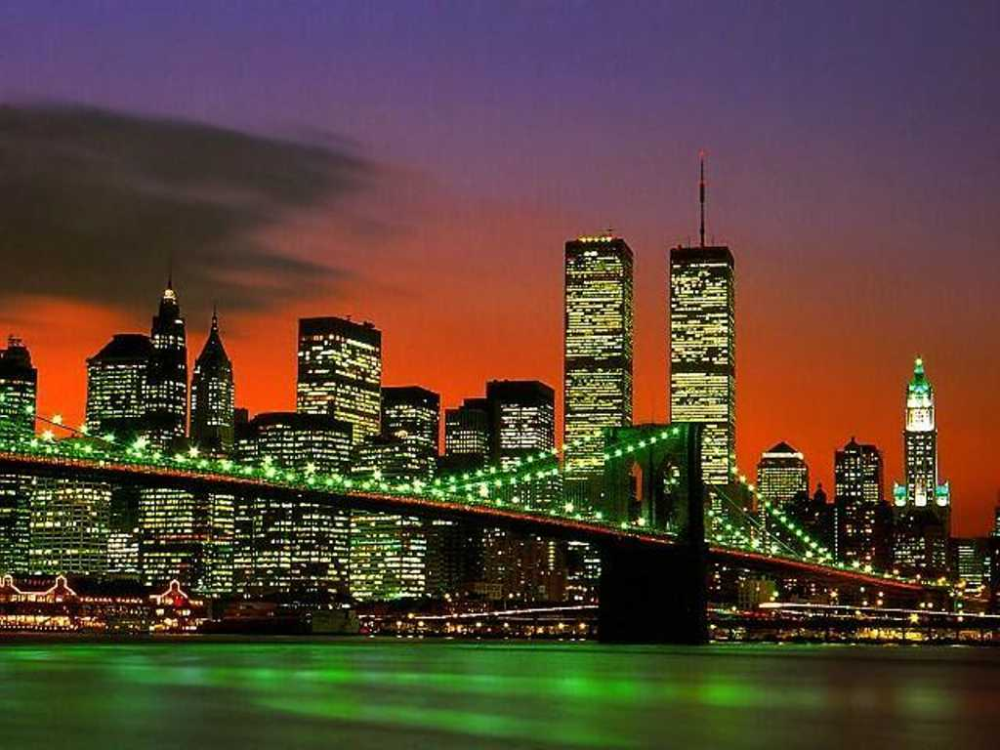
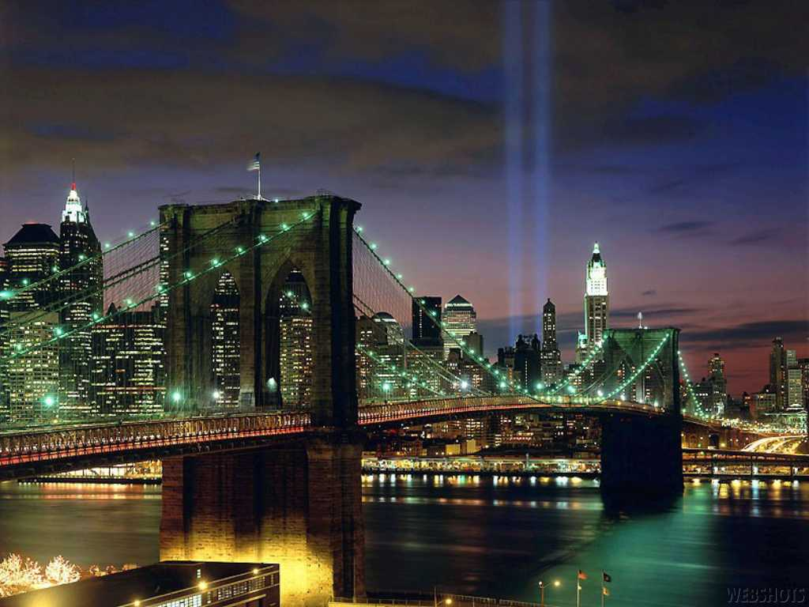
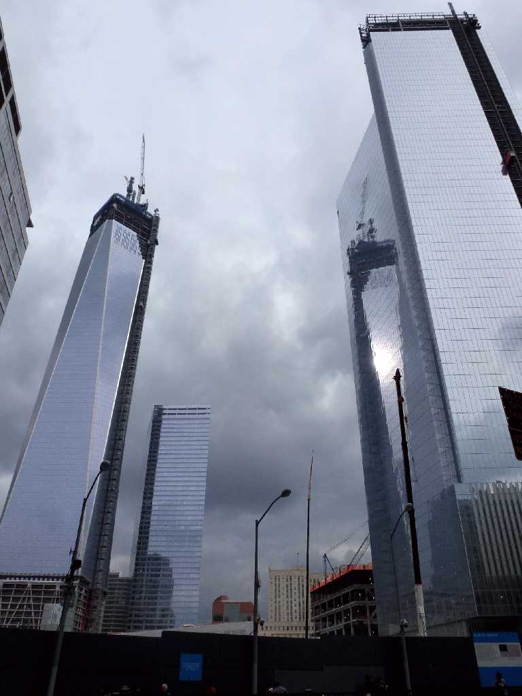
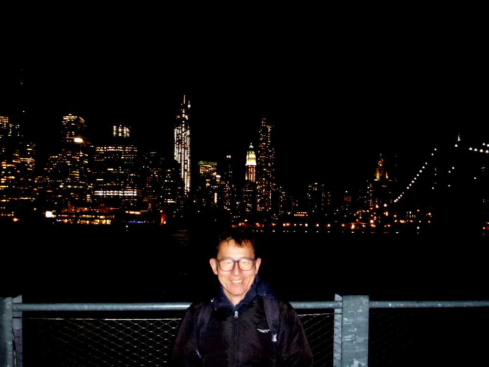
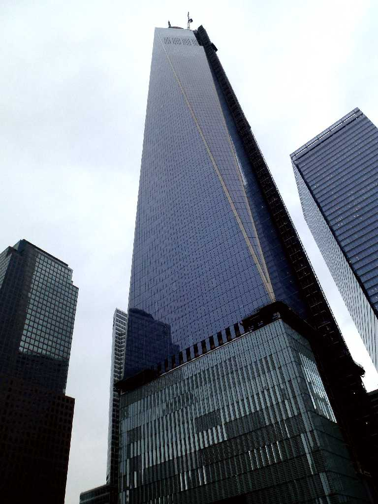
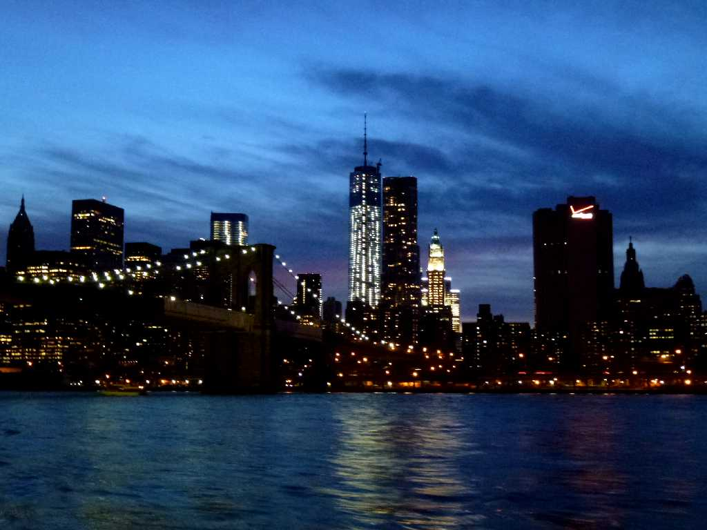
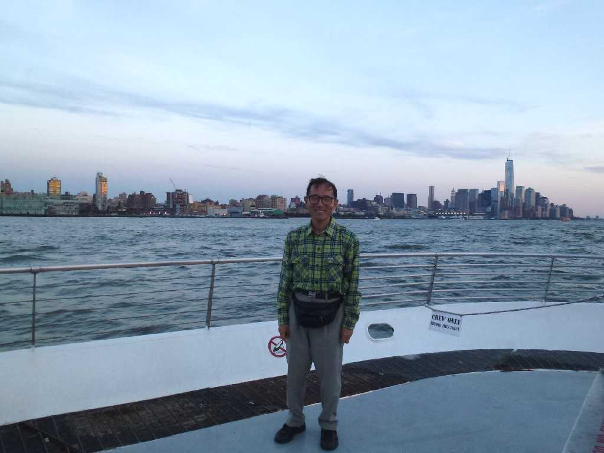

August 1970 Empire State Building Manhattan New York
最初に訪れた学生時代のときは昭和４年に完成したエムパイアステートビル(443m)が一番高く１０２階まで登ったが１９９５年に訪れたときは世界貿易センタービル(527m)が摩天楼の象徴と成り代っていた

February 1995 Manhattan New York

Manhattan New York
そして２００１年にはまた元に戻ってしまった

Ground Zero New York
まだ建設途中のグラウンドゼロ

February 21 2013 Manhattan New York

One World Trade Center Building 541m Ground Zero New York
８０日間世界一周鉄道の旅で６０日目 完成した高さ５４１mのワンワールドトレードセンタービル

Manhattan New York
８０日間世界一周鉄道の旅で６３日目 観光船で夕刻のマンハッタンクルーズ

August 25 2013 Manhattan New York